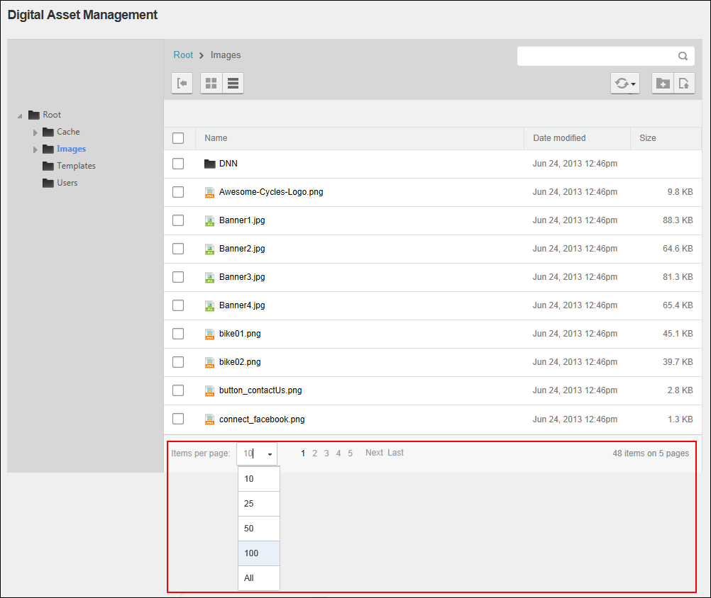

The Digital Asset Management Pro module displays the first ten (10) files within the selected folder inside the Files Window. When there are more than ten (10) files, the following options are displayed on the Files Navigation Bar located at the base of the module, allowing you to navigate to the additional files as well as change the default number of files displayed. All users can perform this task.
Tip: When performing a task such as delete or copy against multiple files, you can select to view up to 100 file or All files on one page. This allows you to perform the task on all those files at one time.

Selecting Items Per Page